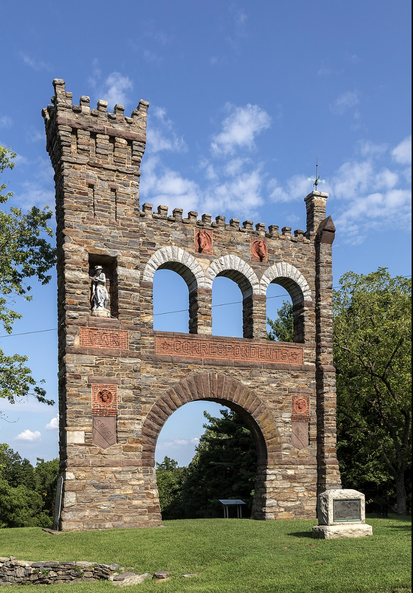

Monument:
The National War Correspondence Memorial
Monuments to journalists are, with one arguable exception, completely nonexistent in Civil War monuments in America, in no small part thanks to the social distance between the actual newspapers read by common Americans and the small, printed names that worked to create the stories within said papers. The only monument that references them is The National War Correspondents Memorial, built by Civil War correspondent George Alfred Townsend in 1891 near Burkittsville, Maryland.
Townsend was the youngest known correspondent who reported for the Union during the war, under the pen name “Gath”. The memorial itself was the crown jewel to an estate he built over the course of a decade, shortly after achieving notoriety for his coverage of the assassination of Lincoln and its aftermath.
The monument dedicates itself specifically to journalists killed in battle, or who died in otherwise warlike circumstances. This was a brutally common fate to befall correspondents at the time, given the sheer danger of Civil War battlefields dominated by Napoleonic military tactics, and Townsend was able to acquire over 157 names of both Union and Confederate journalists.
In modern day, the entire estate is owned by Maryland itself, and the memorial is managed by Gathland State Park. It stands as a tourist attraction to Frederick, Maryland, and has little notoriety in any other way, but it stands as one of the only recordings of the journalists who lost their lives attempting to chronicle the deadliest conflict in American history.
Notably, however, no new names have been added to this monument, despite the nature of what it seeks to remember. The history of journalism as a dangerous profession is not limited to the American Civil War, and even to this day correspondents remain targeted by militaries on both sides of national and international conflicts large and small.
At least 63 journalists have been killed in Gaza over the course of the Israel-Palestine conflict, and 17 in the Russo-Ukrainian war. 94 journalists have been killed in 2023 alone. Despite this, their names go as unremembered as the names of the journalists killed over one hundred and fifty years before.
This monument stands as the only one of its kind, with a list of names both heartbreakingly large and unjustly small, and a reminder of the danger of reporting that goes unheeded no matter how high the death toll remains. This, simply put, should change. The National War Correspondents Memorial contains 157 names. It should contain hundreds more.